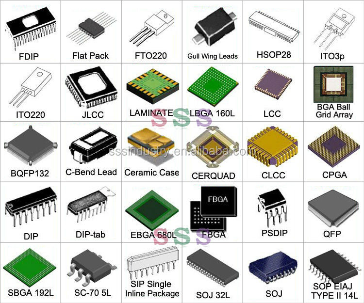

Composant électronique, basé sur un semi-conducteur,
reproduisant une ou plusieurs fonctions électroniques
plus ou moins complexes, intégrant souvent plusieurs types
de composants électroniques de base dans un volume réduit
(sur une petite plaque), rendant le circuit facile à mettre en œuvre.
Voir une vidéo d'explications

En savoir plus